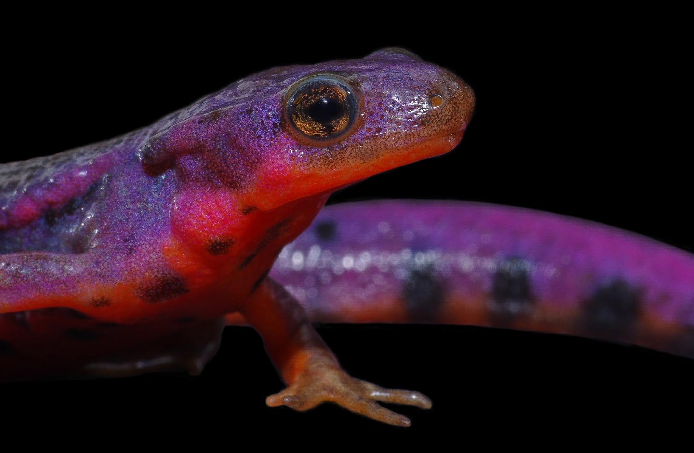
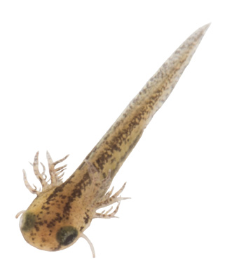
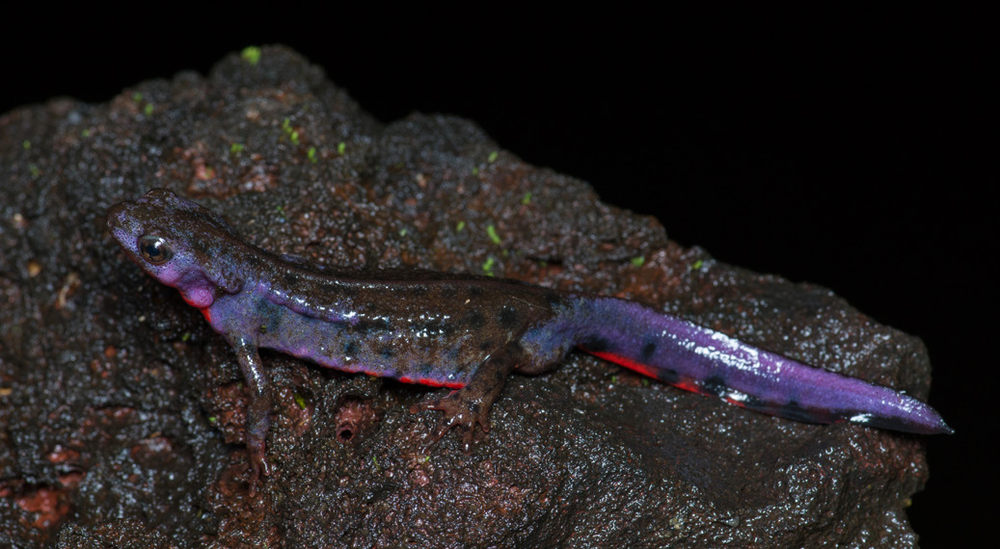
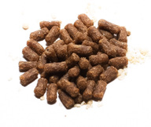

| オカヤドカリ -LAND HERMIT CRAB in JAPAN- | |
| 笹塚 諒 | |

アカハライモリ
Nuptial Coloration of Japanese Fire Belly Newt 婚姻色
笹塚 諒 著
Co
〜ntents〜
イモリ ................................................ 3
アカハライモリの生活 ........................... 5
体色差 ................................................ 7
生活史 ................................................ 9
婚姻色 ................................................11
アカハライモリの婚姻色集 .....................13
Column : 日本のイモリ ........................20
Column : 色彩変異 ..............................27
飼育方法 .............................................33
飼育環境例 ..........................................35
植物の活用 ..........................................39
購入・採集・飼育の注意 ........................41
アカハライモリと生息域が重なる生物種 ...43
参考文献 .............................................47
あとがき .............................................48
33
34
イモリ
Newt
イモリという生き物がいることは知っ
イモリは驚異的な再生能力を持ってい
ているが、どのような生き物かはよくわ
る。四肢や尾、器官といった様々な体組
からない。イモリならそこの壁にいたよ。 織を失っても再生することができる。尾
イモリについて尋ねた際、このような話
の再生は爬虫類の一部で知られているが、
を少なからず聞く。イモリとはどういっ
再生された尾は硬骨でなく軟骨であった
た生き物なのだろうか。イモリは両生類
りと元の尾に劣るものとなる。しかし、
であり、カエルやサンショウウオの仲間
イモリは尾であろうと足であろうと元と
である。日本では水田や池、川の澱など
変わらない完璧な再生が行われ、この再
流れのない淡水中に生息する。近年生息
生能力は回数や加齢の影響を受けず不変
に適した環境が開発などによって減り、 に維持される。もちろん再生できない部
イモリも数を減らしている。
位も存在するが、この能力の研究は再生
そして、混同される生物がヤモリであ
医療に期待されている。
る。ヤモリは爬虫類であり、ヘビやワニ
などの仲間である。趾下薄板という指先
にある特殊な器官で垂直面もやすやすと
南西諸島を除くと日本には一種しかイ
移動できる。漢字でイモリは井守、ヤモ
モリが分布していない。それがアカハラ
リは家守と書く。イモリは井の水、ヤモ
イモリである。
リは家の壁と憶えれば種名としても生息
環境としても混同しにくくなると思う。
3
アカハライモリ
成体 千葉県 ( 夷隅郡 )
学名：Cynops pyrrhogaster Boie, 1826
英名：Japanese Fire Belly Newt 分類：有尾目イモリ科イモリ属
体長：100 mm 〜 130 mm
分布：本州・四国・九州 とその周辺島嶼 ( 移入 : 北海道・八丈島 ) 別名ニホンイモリ。日本固有種であり、 低地から山地の止水域や緩やかな流れ
準絶滅危惧（NT）に指定されている。背面
の河川などに生息する。基本は水中生活
は黒色から暗褐色で、腹面は赤色から橙
を送っているが、雨天時や湿度の高い日
色の不規則な形状の斑紋や模様が入る。 には陸上を移動するため、意外なところ
全長や尾率、体形、表皮の質感、背面の
で出会ったりする。
模様、腹部の模様など地理的な変異が激
食性は肉食で、小型節足動物やオタマ
しい。同個体群内でも個体差が現れる。 ジャクシ、ミミズ、両生類の卵など様々
遺伝的、地理的に分化しているが、分類
なものを捕食している。
上は分布域に連続して見られるため亜種
フグ毒であるテトロドトキシンを持ち、
区分はされていない。一方で形態と行動
赤い腹の模様は有毒であることを他の生
学的手法から 6 種族、生化学的手法から
物に知らせる警告色として働くと考えら
5 集団に区分されるが、両手法による区
れる。強い刺激を受けると身体を反らせ、
分は一致していない。
赤い腹を見せる威嚇行動をとる。
4
アカハライモリの生活
Life of Japanese Fire Belly Newt アカハライモリと出会うには生態を知
アカハライモリは昼夜問わず活動して
る必要がある。まず、どのような環境で
いる姿を見ることができる。しかし、活
見られるのだろうか。前述した通り、止
動が活発になり、多くの個体が姿を現わ
水や流れの緩やかな河川に生息する。詳
すのは夜間である。夜間観察は危険生物
しくは、田んぼや池、湿地、農業用水路、 や足元への注意が昼間より重要になるた
渓流といった環境である。しかし、これ
め、野外活動に慣れてから楽しもう。
らだけではアカハライモリは生息できな
捕獲は素手でも可能だが、水中では思っ
い。重要なのは、この環境の周囲に良好
ているより機敏に動くため、網を使用す
な森林が存在しているかという点である。 るのが無難である。目視で確認できずと
アカハライモリは上陸から成熟まで、幼
も、植物の生い茂っているあたりに網を
体の期間に森林内で陸上生活を送る。つ
入れると捕獲できることがある。とりあ
まり、成体と幼生が暮らせる良好な水域
えず網を入れてみることも大切である。
と幼体が暮らせる良好な森林環境が揃っ
両生類にとって人間の体温は熱すぎる
た場所でないとアカハライモリは世代を
ため、素手で長く触ることは控える。触っ
繋ぐことができない。
た後は必ず手を洗おう。
5

アカハライモリは適した環境に集まる
ため、1 個体見つけることができれば高
確率で複数個体見られる。
イモリは肉食であり、様々な生物を貪
アカハライモリは水中生活を送ってい
欲に捕食する。基本は捕食が容易で通年
るが、幼生期以外は肺呼吸で酸素を得て
存在する水生昆虫をメインとしている一
いる。定期的に水面へ上昇し、呼吸する
方で、ヌマエビ類や稚魚など動きの速い
様子が観察できる。呼吸は一瞬で、水面
生物も隙を突いて捕食することがある。 に顔をつけたら直ぐに潜ってしまう。水
イモリは動くものを餌として認識するカ
上の捕食者に晒される無防備な時間を可
エルと違い、動かないものも餌認識が可
能な限り短縮していると推測できる。呼
能である。これにより、卵も捕食対象と
吸の際はとても俊敏である。
なる。昆虫卵や魚卵、両生類卵を捕食す
る様子が観察されており、希少なサンショ
ウウオや一部地域のモリアオガエルなど
保護されている両生類の卵塊、幼生の捕
食が保護活動において冷遇されている。
同種の卵や幼生の共食いも行う。
6
体色差
Body color variations
オス
メス
雌雄の見分け方としては、
オスは総排出腔が大きく膨らみ、
耳腺が発達する。
メスは総排出腔が大して膨らまず、
耳腺が控えめ。
尾の形状も大きな判断基準であり、
オスは幅広で短く、
メスは幅狭で細長い。
特徴の薄い個体は非常に見分け難い。
7
腹面
8
生活史
Life history
アカハライモリの繁殖期は 4 〜 7 月。 メスは水中の植物や落ち葉を後肢で二
繁殖期のメスは性フェロモンであるアイ
つ折りにし、その隙間へ寒天質に包まれ
モリンを放出する。このアイモリンを受
た卵を 1 つずつ産む。
け取った繁殖期のオスは、メスを繋ぎと
卵は水温によって変わるが、2 〜 4 週
める性フェロモンであるソデフリンを放
間程度で孵化する。孵化した幼生は外鰓
出する。雌雄がタイミングよくフェロモ
を持ち、四肢がない。身体を支える役割
ンで交信することによって繁殖行動が行
を持つバランサーという突起が顔の側面
われる。
に存在する。成長するとバランサーを失
オスはメスの近くで婚姻色に染まった
い、前肢から先に四肢が生えてくる。水
尾を S 時に曲げて小刻みに震わせる求愛
中の無脊椎動物を主に捕食する。幼生は
行動をとる。メスは求愛を受け入れると、 1 〜 3 ヶ月程度かけて充分に成長すると
オスの尾に触れて合図を送る。合図を受
外鰓が消え、乾燥耐性を持った皮膚へ変
けたオスは精包を落とし、メスが総排出
化し、上陸する。上陸した幼体は 3 〜 5
腔から体内に取り込むことで体内受精が
年ほど森林の湿潤な環境で陸上生活を送
完了する。
り、成熟すると再び水域に現れる。
9

Growth of larvae
Egg
wrapped in jelly
Larva
just after being born
have balancer and external gillLarva
lost balancer but gained limbsJuvenile
lost external gill and landed 10
婚姻色
Nuptial coloration
本書の題でもある婚姻色とはそもそも
成熟したイトヨのオスは体色が青みが
どういったものなのだろうか。その名の
かり、喉から腹部にかけて赤色の婚姻色
通り婚姻、つまり繁殖に関わる色のこと
を呈する。婚姻色を発現させたオスは縄
である。魚類や両生類、爬虫類などの一
張りを作り、侵入した同種のオスを追い
部には、成熟した個体が繁殖期に平常時
払うようになる。模型実験によって、こ
とは異なった色彩や模様を纏うものが知
の行動は化学物質などによるものではな
られている。この繁殖期に現れる特有の
く婚姻色の色と範囲を視覚で捉えるとい
体色を婚姻色と呼ぶ。雌雄異なる形で現
う刺激に起因することが明らかになった。
れる種が多く、まさに性的二形の例であ
る。繁殖期に分泌される性ホルモンによっ
attack
ignore
て変化が現れ、多くの種でオスに顕著な
発現を見せる。色彩の濃さや範囲は個体
差が大きく、コンディションにも左右さ
イトヨ♂
れる。
attack
ignore
婚姻色は繁殖期の異性・同性識別や繁
殖行動の誘発に役立つとされており、鍵
刺激（信号刺激とも言われ、生物に一定の
本能的な行動を引き起こす特定の刺激）に
この婚姻色は日本の両生類ではトノサ
もなる。つまり、雌雄における繁殖行動
マガエルやアカハライモリに知られてい
の誘起だけでなくオス同士の争いにも関
る。特にアカハライモリは個体差が激し
わっている。有名な例としてはトゲウオ
く、非常に興味深い。というのが本書の
の一種であるイトヨがあげられる。
テーマとなっている。
11

先も述べたように、婚姻色は必ずしも
それでは本題であるアカハライモリに
オスだけに発現するわけではない。ベニ
ついて。アカハライモリの婚姻色は、一
ザケやウグイは雌雄共に婚姻色を纏い、 般的にオスの尾と耳腺（首の上部にある突
ジュズカケハゼはメスのみに婚姻色が現
起）で青色から紫色を呈する。色味は個体
れる。ここまで例に魚類が多くあがって
差が激しく、一概に表現することは難し
いることにお気付きだろう。婚姻色は魚
い。そして、婚姻色の発現する範囲も個
類で最も知られており、様々な魚種が繁
体差が激しく、尾と耳腺のみの個体から
殖期に美しい色彩を纏う。日本ではタナ
全身が染まる個体まで存在する。飼育下
ゴ類が有名で、魚好きをタナゴ釣りに掻
でも婚姻色は現れる。個体の地色、模様、
き立てる。種によって色合いは大きく変
婚姻色の色味、範囲を鑑みると、十人十
わり、魅力的だ。婚姻色の強く現れる個
色と言えるほどに多様である。もちろん
体が最高のコンディションだった場合、 全身に婚姻色が現れる個体は稀で、なか
息を呑む美しさを見せる。
なか見かけることはない。
婚姻色を見せる生物の極一部例を下で
本書では次ページから、そんな全身婚
紹介する。赤青黄で選んでみた。様々な
姻色個体含め婚姻色を発現した多数のア
生物が繁殖期に美しい色彩を纏っている。 カハライモリの写真を掲載した。
水族館でも街中でも森の中でも生物と出
期間限定の美しさ
会った際に、気にかけて眺めると普段と
『アカハライモリの婚姻色』
は違った感動を得られるかもしれない。
を堪能いただきたい。
Ⅰ:背鰭臀鰭に縁が黒い帯状の黄橙色な婚姻色
を呈したアブラボテ Tanakia limbata オス
Ⅱ:腹部が露草色に染まる婚姻色を呈した
シマヨシノボリ Rhinogobius nagoyae メス
Ⅲ:側頭部から腹部にかけて赤い婚姻色を呈した
ヒガシニホントカゲ Plestiodon f nitimus オス
Ⅰ
Ⅱ
Ⅲ
12

Photograph Collection
Nuptial Coloration
of
Japanese Fire Belly Newt
13


14

15

16


17

18


Column
日本のイモリ
-Newt in Japan-
日本には 3 種のイモリが分布している。 本コラムではその 2 種を亜種分類に考
その全てが日本固有種であり、アカハラ
慮して３種に分けて紹介したい。アカハ
イモリを除く 2 種はどちらも南西諸島に
ライモリとはまた違った魅力を持つ、南
分布する。
西諸島のイモリ達をご覧いただきたい。
アマミシリケンイモリ Cynops ensicauda ensicauda 分布：奄美諸島
↓日本爬虫両棲類学会の日本産爬虫両生類標準和名では
亜種を認めていないが、本書では分けて紹介する。本亜種
が基亜種であるため正しい和名はシリケンイモリだが、
便宜上アマミシリケンイモリとして表記する。準絶滅危
惧（NT）に指定されている。体色は黒色から暗褐色で、腹
面は橙色から朱色を呈す。本個体群は背面に赤褐色や橙
色の帯斑紋模様を持つ個体が多い。低地から山地の湿潤
な環境に広く生息する。
オキナワシリケンイモリ Cynops ensicauda popei 分布：沖縄諸島
↑準絶滅危惧（NT）に指定されている。奄美の個体群を基
亜種とし、沖縄の個体群を亜種として分ける説がある。
ペット流通では基本分けられている。全長は最大180mm 近くまで成長する。体色は黒色から暗褐色で、腹面は橙色
から朱色を呈す。本個体群は、背面に通称金箔と呼ばれる
黄土色の明色斑紋が入る個体が多く見られる。明色斑紋
の面積は個体差が激しい。陸上でも少なからず見かける
が、アカハライモリ同様水中生活に長けている。
イボイモリ Echinotriton andersoni 分布：奄美大島・請島・徳之島・沖縄島・瀬底島・渡嘉敷島
←県指定天然記念物・種の保存法・絶滅危惧Ⅱ類（VU）に
指定されている。体色は黒色から暗褐色で、扁平な体形。
肋骨の隆起が見られ、ゴツゴツした印象を持つ。低地から
山地の湿潤な環境に生息する陸棲のイモリである。幼生
期は水中で生活する。化石種がヨーロッパの第三紀地層
で発見されており、原始的な形態を残している。
20

21


22

23

24

25

26

Column
色彩変異
-Color mutation-
アカハライモリは体色において個体差
アカハライモリは独特な色彩変異が知
の大きい種であるが、突然変異によって
られている。本来、アカハライモリには
本来の色彩と掛け離れた体色の個体が現
腹側を赤くする遺伝子が備わっているの
れることがある。この現象は色彩変異と
だが、突然変異を起こし全身に働いてし
呼ばれている。
まうことで腹面だけでなく背面も赤くな
色彩変異とは、突然変異によって色素
る色彩変異である。この色彩変異の個体
胞や色素合成などに変化が起こり、通常
は、一般的に赤変個体と呼ばれている。
とは異なる体色が発現するものである。 上の写真はまさにこの赤変個体である。
最も耳にする色彩変異はアルビノであろ
この個体には心底驚かされた。本当に
う。アルビノとは先天的にメラニンの生
全身が赤色、いや橙色をしていた。黒斑
合成に関わる遺伝情報が欠損し、メラニ
は色彩変異でも残るようだ。ビビッドオ
ンが欠乏する遺伝子疾患の個体を指す。 レンジのイモリが動く様は、まるで精巧
体毛や皮膚が白く、瞳孔は毛細血管の透
なおもちゃを見ていると感じるほど不自
過により血液の色がそのまま見えるため
然であった。同産地で他の色素の薄い個
赤色を呈す。アルビノと混同される白変
体を色彩変異だろうかと、少し悩みなが
個体（リューシスティック）は色素は作れ
ら見ていたことが馬鹿らしく思えるほど
るが体色を白くする突然変異によるもの
に掛け離れた存在であると強制的に認識
であるため、瞳孔は赤くならない。
させられた。
27

28

29


飼育方法
Rearing method
アカハライモリは、両生類爬虫類の中
本種は一般的に水中で飼育されるが、
でも比較的手軽に飼育することができる
陸上飼育も可能である。選択する飼育方
種である。そんなイモリの飼育方法を紹
法で必要な器具は変わってくるため、様々
介する。
な情報をしっかりと確認してほしい。
飼育ケース
オブジェ
プラケースやガラス水槽、ガラスケージなど鑑賞
隠れ処として身を潜めることのできるものを用
面に優れ、世話のしやすいものを選ぶ。脱走防止
意するとイモリ達は安心できるが、必要という
にしっかりとした蓋を用意する。
訳ではない。人に慣らしたい場合や観察を考慮
床材
する場合は入れないのをお勧めする。熱帯魚や
爬虫類用のシェルター、流木、石などが便利で
陸上飼育では水苔や赤玉土、ヤシガラなど保湿力
見栄えも良い。水中飼育の場合は水上で休める
が高いものを選ぶ。両生類爬虫類飼育用品や園芸
スペースを用意してあげたい。石を組み合わせ
用品として販売されている。水中飼育では掃除の
て水上面を作る方法や、亀飼育用の浮島などを
しやすさを重視し、何も敷かない飼育も一般的で
用いると便利である。
ある。鑑賞性を高めたい場合は、砂利や化粧砂な
どアクアリウム用の床材を用いると良い。
霧吹き
フィルター
陸上飼育において、床材の加水や湿度を保つた
めに必要である。
水を清潔に保つためにあるに越したことはない
が、定期的な換水が手間でなければ必要ない。
その他
冬場にかなり冷え込む地域ではヒーターなどの
ピンセット
加温器具が必要。温湿度計もあると管理がしや
給餌に用いる。餌のばら撒きでも問題ないが、個
すい。ライトは演出に良い。陸上飼育の場合は
体の食事量管理や残餌の防止にピンセット給餌は
水入れが必要。繁殖を試みる際は産卵床となる
最も適している。なにより、自分の手から餌を食
水草を用意する。
べてくれると嬉しい。
33

主な世話の内容は、給餌、換水、掃除
である。
アカハライモリの成体は何でもよく食
べるため、一般的に販売されている餌で
充分である。配合飼料は、イモリ用やカ
メ用、肉食魚用の餌が適している。生き
餌としては、コオロギやハニーワーム、
ワラジムシが最適である。有尾類は等脚
類を好んで食べるため、餌の食いが悪い
飼育温度は 25℃前後が最適であるが、
時はワラジムシを与えると良い。生き餌
低い分には人間が凍えない室温であれば
のみを与える際は、カルシウムパウダー
さほど問題はない。高温と蒸れには注意
を定期的にダスティングする。冷凍赤虫
で、夏に猛暑となる地域では風通しの良
などの冷凍餌も食いが良い。2 〜 3 日に 1
い涼しい部屋に移してあげるか、クーラー
回程度を目安として適量の餌を与え、体
をつける。保冷剤を用いるのも一つの手
型を見ながら調節する。与えすぎに注意。
である。
換水は汚れや臭いが気になれば直ぐに
繁殖を試みる場合は、飼育ケースに成
行う。フィルターを使用することで頻度
熟した親個体をペアまたはトリオ（オス１
を下げることができる。汚い環境で放置
メス２）で飼育し、水草を多めに入れる。コ
すると皮膚病などの原因となるため、清
ツは、低温期を親個体に与えることであ
潔な環境を保つよう心掛ける。水はカル
る。季節変化を感じさせることで、春の
キ抜きを使用したものや、汲み置きを使
到来による繁殖期への移行を促す。産み
うのがベストである。
付けられた卵は水草ごと回収し、別容器
で管理する。孵化した幼生は上陸まで完
全水中飼育となる。孵化後はヨークサッ
クがなくなると捕食を開始する。餌には
Tylototriton verrucosus
ミジンコやブラインシュリンプを用意す
る。ある程度成長したら、餌をイトミミ
水中の糞や食べ残しはスポイトで取り
ズやアカムシに変える。上陸した幼体は
除き、陸のものはピンセットなどで適宜
陸生イモリと同じような飼育環境を用意
取り除く。
し、陸上飼育を行う。
34
飼育環境例−プラケース−
Example of rearing environment : plastic case 最も簡単な飼育環境の例を紹介する。
用いたのは昆虫飼育用のプラスティック
ケースと溶岩石である。
掃除優先でベア
タンク
（低床に何も敷かない飼育方法）
を
選んだ。
水上部分は溶岩石を組むことで
作り出した。
シンプルに表現することで
イモリだけでなく、
水と石の美しさも楽
しめるケースとなった。
35
レイアウトを組むにあたって観賞性はも
ちろんだが、
イモリのことを念頭に置く。
イ
モリの生活で必要な環境を土台としてレイ
アウトを組む。
ここをこう使ってくれたら
いいな、
など考えながら組み立てるのは楽
しい。
そして、
イモリ達がその通りに使って
くれるとなんとも嬉しいものである。
飼育
の醍醐味の一つと言えるだろう。
観察していると、
性格が見えてくる。
落ち
着きのない個体や静かな個体、
好奇心旺盛
な個体に臆病な個体。
個性があって面白い。
36
飼育環境例 −ガラス水槽−
Example of rearing environment : glass tank フレームレスのガラス水槽を用いてみた。
見た目の良さや
傷の付き難さなどのメリットがある一方で、
割れ易さや高重
量などのデメリットがある。
凹構造のレイアウトを用い、
陸
域を等サイズにしないことで自然感を表す。
床材に溶岩砂利
を選び、
水中モーターを埋め込んだ。
多孔質である溶岩には
微生物が住みつきやすく、
モーターで水を通すことによって
生物濾過の効果を得ることができる。
37
イモリが陸域と水域を移動することによ
る陸域の崩壊を防ぐために、
園芸用の鉢底
ネットで堤を作った。
そして露出したネッ
トを隠すことに加え、
積んだ砂利の崩壊を
二重で防ぐためにモスを敷き詰めた。
モス
は瑞々しい緑が映えるので、
景観としても
とても良い。
産卵床や水の浄化にも役立つ。
熱帯魚屋や渓流などで手に入れることがで
きる。
38

植物の活用
Utilization of plants
両生爬虫類を飼育するにあたって、レイアウト
に植物を多用するビバリウムが人気である。植物
を用いることで、より自然な景観を演出できる。
数多ある植物の中から好みなものを見つけ出し、
飼育に添えてみるのはいかがだろうか。
39
日本には雄大な自然が多く存在する。
一つの風景として受け取るだけでなく、植物の
生え方や水の流れなどにも目を向けると飼育
に活かせる部分が見えてくるだろう。
40
購入・採集・飼育の注意
Precautions for purchasing and collect and rearing アカハライモリの入手方法は購入（譲
飼育に関しては、過密飼育に注意する。
渡）か採集となる。購入については熱帯魚
ついついショップや野外でイモリを見か
屋や両生爬虫類ショップ、ホームセンター
けると持ち帰りたくなる方が少なからず
などで販売されている。痩せておらず、 いると思う。自身の飼育環境における適
健康そうな個体を選ぶ。その中から動き
正数を超えると、餌の行き届かない個体
や顔つき、模様など気に入ったものを厳
が現れる、噛み合いによって手足の欠損
選する。購入の際は、産地を聞いておく
が起きる、汚れの蓄積が加速するなどの
ことがベストである。
問題が発生する。新しく迎えたくなる気
採集に関しては注意点がいくつかある。 持ちは理解できるが、一度飼育している
まず初めに、採集が禁止されていない地
個体たちのことを思い出し、熟考してほ
域での採集を行うこと。埼玉県や愛知県
しい。
（渥美）では条例により、県下でのアカハ
先にも述べたが、アカハライモリは個
ライモリ採集が禁止されている。他地域
体群によって分化が起きている。様々な
でも、保護区域内での採集は禁止されて
産地の個体達を飼育する場合は、産地の
いる。採集に赴く際は事前に調べておく。 違いなどはしっかりデータとして記録し
採集が禁止されてない地域でも、私有地
ておく。そして、飼育している個体は絶
へ無断で侵入し、荒らすことは問題であ
対に逃がしてはならない。産地の違う個
る。地主に旨を伝え、承諾を得てから探
体を逃がしてしまうと、遺伝子汚染（地域
索を行おう。
特有の分化が起きている個体群に他地域
ここから先はモラルの問題であるが、 個体が人為的に持ち込まれることによっ
述べておく。指定希少野生動植物などの
て交雑が起き、特有の遺伝子構成や性質
条例に定められていなくとも、東京都や
などが失われてしまうこと）が起きてしま
神奈川県などでは県指定の絶滅危惧種に
う。一度連れ帰った個体は最期まで飼育
指定されている。特にこだわりがないの
をする。どうしても飼育を続けることが
であれば、このような希少な個体群の採
難しくなってしまった場合はショップや
集は控えるべきである。そして、過剰個
知り合いに相談し、引き取ってもらう。
体数の採集（乱獲）は最も恥ずべき行為で
ある。自分が飼育できる数、最低限の数
だけをありがたく持ち帰る。環境や個体
群に配慮して、適切に楽しむことが重要
である。
41
形態と行動学的手法による種族分類
東北
篠山
広島
関東
渥美
中間
アカハライモリの
渥美種族は絶滅したと言われていたが、
《形態と行動学的手法による種族分類》
渥美種族の形態的特徴を有する個体群の
《生化学的手法による集団区分》
現存が確認されている。八丈島の個体群
について、それぞれ大まかに図示した。 は四国からの移入である。
生化学的手法による集団区分
東北
西日本
関東
中間
南九州
42

アカハライモリと生息域が重なる生物
Some species : the habitat overlap with J.F.B.N
アカハライモリと生息域を共にしてい
生物は互いに関わりあって生きている。
る他の生物種を紹介したい。これらの生
様々な種に目を向けると新しい発見が
き物が見られたら、近辺にアカハライモ
待っているかもしれない。生き物を観察
リがいるかもしれない。
しに野外へ出向いてみよう。
シジュウカラ
Parus minor
ミヤマクワガタ
Lucanus maculifemoratus
ニホンカナヘビ
Takydromus tachydromoides
タカチホヘビ Achalinus spinalis
ルリボシカミキリ
ニホンウナギ
Rosalia batesi
Anguilla japonica
トゲナシヌマエビ
ヤママユ
Caridina typus
Antheraea yamamai
43
ヒグラシ Tanna japonensis
←朝夕にカナカナ（ヒュキキキ）と美しく鳴く。夕方に
聴くヒグラシの鳴き声はなんとも心に響き、夏の楽し
さと儚さを感じる。6月下旬頃から発生し、9月上旬頃
までは声を聴くことができる。ある程度の木の密集が
必要で、都市部の公園などでは見られない。林に生息
し、低地から山地まで見られる。背面は緑の模様が入
り、オスの胴は空洞なため光に透ける。羽化直後は全
身が翡翠色で、光の角度によって翅が青く反射する。
サワガニ Geothelphusa dehaani
→純淡水性のカニであり、小川や渓流など綺麗な水に
生息する。水質階級Ⅰの指標生物である。体色の変異
が大きく、赤黒い個体、青白い個体、紫味の強い個体な
どが見られる。地域個体群によって多い体色は分かれ
る。普段は水中や水のかかる岩上にいるが、雨の日に
は広く歩き回る。イモリとサワガニが一緒にいる光景
は珍しくない。
ハグロトンボ Calopteryx atrata
←平地から丘陵地の流れが緩やかな河川付近で見ら
れる。メスは全身が黒いが、オスは腹部がメタリック
グリーンに輝く。舞うように飛ぶ。翅を休める際は、4
枚の翅を立てた状態で重ねて閉じる。薄暗い林床の水
辺で黒いトンボがひらひらと舞う様子は、神秘的とも
不気味ともとれる。
ドジョウ Misgurnus anguillicaudatus
→平地の水田や湿地などに生息する。味蕾のある口ひ
げで餌を探す。腸呼吸という特殊な呼吸方法を持ち、
溶存酸素が減ると水表面から空気を飲み込み、腸でガ
ス交換を行う。日本では古くに盛んに食されていた
が、現代では食用にする習慣は少なくなっている。
44

ニホンヤモリ Gekko japonicus
→壁面を特殊な指先の構造（趾下薄板）によって移動
できる。とても可愛い。都市部に多く見られるため、意
外なところで出くわすことがある。夜行性。敵に襲わ
れたり、極度に驚くと尾を自切する。切れた尾は数分
間のたうち回り、注意を引く。切れた尾は完全に元に
は戻らないが、再生する。
マムシ Gloydius blomhof i
←有名な毒蛇。平地から山地の林床や藪に生息する
が、水田や渓流など水辺にも多く現れる。カモフラー
ジュが精巧で、注意が必要。脊椎動物を広く食す。アカ
ハライモリも捕食対象である。赤外線感知器官（ピッ
ト器官）を持ち、生物の体温を感知できる。毒は出血毒
だが、神経毒も含まれる。
ヒバカリ Hebius vibakari
→平地から山地の森林に生息し、水辺や多湿な環境を
好む。非常に泳ぎが上手く、ミミズやオタマジャクシ、
カエル、魚などを食す。昼夜問わず活動しているのを
目撃できる。尾の先を自切できるが、再生しない。無毒
で、穏やかな蛇である。サイズや動作など、日本の蛇で
最も愛嬌があると思う。
タカチホヘビ Achalinus spinalis
←低地から山地の森林に生息し、乾燥にとても弱い。
地中性で夜行性。雨天時や雨天後の夜間に見つかる
ことが多い。ミミズや甲虫類の幼虫を捕食する。鱗は
ビーズ状で光沢があり、光を反射してキラキラと虹色
に輝く。幼体は黒紫色だが、成長に従って黄色味を帯
びていく。幽けくも美しい蛇。
45
ニホンアマガエル Hyla japonica
←平地から低山地の非常に広い範囲に生息する。指先
に吸盤を持ち、地表から樹上まで幅広く活動できる。
周囲の環境に応じて体色を黄緑色から灰白色まで変
化させることができる。皮膚の粘膜には細菌などから
身を守るために毒が分泌されているので、触った後は
手を洗う。近畿地方と中国地方の間を境に遺伝的な分
化がみられる。写真の個体は東日本で撮影。
モリアオガエル Rhacophorus arboreus
→山地や山地周辺の森林に生息する。指先に吸盤を
持ち、樹上生活に適応している。背面模様に地域差や
個体差が大きく、緑一色の個体から赤褐色の斑模様が
大半を占める個体まで差異が出る。卵塊は水場に張り
出した木の枝葉に産み付けられ、孵化した幼生は雨に
よって溶け崩れた卵塊の泡と共に水面へ落ちる。
カジカガエル Buergeria buergeri
←山地の渓流や湖などの清流に生息する。体色は灰褐
色で、河川石に上手く紛れて見分けがつき難い。繁殖
期にはオスが水辺の石の上に縄張りを持ち、繁殖音を
発する。フィフィフィーフィーと鳴き、日本で最も美
しい声で鳴く蛙と言われている。
アズマヒキガエル Bufo japonicus formosus
→東日本亜種。低地から山地の非常に広い範囲に生息
する。水域依存性が低いため、乾いた陸地でも難なく
活動できる。都心部や湾岸域にも生息しており、夜に
公園など一定以上の土がある環境を探すと簡単に出
会える。最大で18cm程まで成長し、迫力がある。毒（ブ
フォトキシン）を持ち、強い刺激を受けると耳腺から
分泌する。ガマガエルはヒキガエルの別名である。
46
A list of references
書籍
内山りゅう・前田憲男・沼田研児・関慎太郎,2002.決定版 日本の両性爬虫類.平凡社,東京.336pp.
大谷勉,2010.日本の爬虫類・両生類:飼育図鑑,川添宣広編.誠文堂新光社,東京.255pp.
川添宣広,2014.フィールドガイド:日本の爬虫類・両生類観察図鑑,大谷勉監修.誠文堂新光社,東京.160pp.
佐々木亨,2010.イモリ:有尾類/アカハライモリ・アホロートルの仲間たち,川添宣広編.誠文堂新光社,東京.111pp.
千石正一,1979.原色両性・爬虫類.家の光協会,東京.206pp.
高田榮一・大谷勉,2011.原色爬虫類・両生類検索図鑑.北隆館,東京.292pp.
福家悠介,2015.琉球の爬虫両生類図鑑:沖縄諸島編.Kindle,沖縄.56pp.
松沢陽士,2014.田んぼと水辺の生き物:はじめての飼育と採集.Gakken,東京.175pp.
山崎利貞,2005.爬虫・両生類ビジュアルガイド:イモリ・サンショウウオの仲間.誠文堂新光社,東京.144pp.
論文
林光武,1993.ダンスを踊って求愛：アカハライモリ.両生類・爬虫類１:アシナシイモリ・サンショウウオ.週刊朝日
百科動物たちの地球,97:20-22.
Kikuyama,S.et al. 1995. Sodefrin: A female-attracting peptide pheromone in newt cloacal glands. Science, 267:1643-1645.
Matsui,K., Marunouchi,J. and Nakamura,M. 2003. Red Variants of the Japanese Newt Cynops pyrrhogaster (Amphibia: Salamandridae): Review of Records and Captive Observations on the Heredity of Coloration. Current Herpetology, 20(1): 37-42
Nakada,T., Toyoda,F., Matsuda,K., Nakakura,T., Hasunuma,I., Yamamoto,K., Onoue,S., Yokosuka,M. and Kikuyama,S. 2017.
Imorin: a sexual attractiveness pheromone in female redbelliednewts (Cynops pyrrhogaster). Scientific Reports, 7:41334.
DOI:10.1038/srep4133.
Sawada,S. 1963. Studies on the localraces of the Japanese newt, Triturus pyrrhogaster Boie. Hiroshima Univ, B-1 21:167-180.
Sköld,H.N., Amundsen,T., Svensson,P.A., Mayer,I., Bjelvenmark,J. and Forsgren,E. 2008. Hormonal regulation of female nuptial coloration in a fish. Hormones and Behavior, 54:549-556.
Tominaga,A., Meyer-Rochow,VB., Okamoto,T., Kuriyama,T., Nishikawa,K. and Matsui,M. 2016. Origin and Genetic Uniformity of Introduced Population of Cynops pyrrhogaster (Amphibia: Urodela) on Hachijojima Island. Current Herpetology, 35(1):64-68.
Tsuruda,K., Arakawa,O., Kawatsu,K., Hamano,Y., Takatani,T. and Noguchi,T. 2002. Secretory glands of tetrodotoxin in the skin of the Japanese newt Cynops pyrrhogaster. Toxicon, 40(2):131-136.
Werner Himstedt. 1979. The Significance of Color Signals in Partner Recognition of the Newt Triturus alpestris. Copeia, 1979(1):40-43.
撮影機材
PENTAX K-5 Ⅱ
smc PENTAX-DA 35mm F2.8 Macro Limited PENTAX K-3 Ⅱ
smc PENTAX-D FA MACRO 100mmF2.8 WR
ORIMPUS STYLUS TG-835 Tough HD PENTAX-DA 15mmF4ED AL Limited PENTAX オートフラッシュ AF201FG
47
あとがき
Postscript
↑沖縄本島で生き物採集に勤しむ筆者(友人撮影)
私は大学生になるまで野外でイモリ
本書の作成には、先輩、同期、友人、
を見たことがなく、持ち合わせている知
両親など多くの方々に多大なご協力を賜
識は、水の中にいる、黒と赤の色彩を
りました。特にフィールドに付き合い、
持った有毒な両生類というくらいのもの。 探索や撮影を手伝っていただいた友人や
フィールドワークに出るようになってか
先輩には深く感謝致します。そしてこの
ら、未だ野外で見たことのない有尾類を
場を借りて、皆様に改めて厚く御礼申し
見てみたいと思うようになりました。
上げます。
探究心に突き動かされ、まだ少し寒さ
2017 年 8 月
の残る春先に、イモリ採集へ向かったの
です。何度か挑み、漸く捕獲したアカハ
ライモリを何匹か手に取ってみると、あ
ることに気付きました。尾の青い個体が
◉作者紹介
いる。日にあたりキラキラとメタリック
笹塚 諒 Makoto Sasazuka
ブルーに輝く美しい尾に目を奪われ、魅
せられました。さらに別の場所で真紫な
1995 年生まれ。東京以外に住んだこ
尾の個体を、翌年には全身が青に染まっ
とがなく、自然に強い憧れを抱いてい
smc PENTAX-DA 35mm F2.8 Macro Limited smc PENTAX-D FA MACRO 100mmF2.8 WR
た個体を目撃しました。これらからイモ
た。手に乗るサイズの小型生物を好み、
HD PENTAX-DA 15mmF4ED AL Limited リの婚姻色にますます興味を惹かれるこ
オカヤドカリ、セミ、フグ、ヤモリを
PENTAX オートフラッシュ AF201FG
ととなり、本書を作成するに至りました。
特に尊ぶ。
48
Nuptial Coloration of Japanese Fire Belly Newt ２０１７年 8 月 23 日 第一発行
筆者 笹塚諒
監修 笹塚諒
写真 笹塚諒
イラスト 笹塚諒
デザイン 笹塚諒
© 2017 Makoto Sasazuka
Wrote in Japan
乱丁・落丁はお取り替え致します。
本書の無断複写・無断転載は著作権法上での例外を除き、禁じられています。
ご連絡やご意見はこちら (isa.gecko2@gmail.com) までお願い致します。
日本の オカヤドカリを
網 羅 し た 極 上 の 一 冊
オカヤドカリ -LAND HERMIT CRAB in JAPAN-
笹塚 諒 著
第一発行 完売
日本分布全 8 種の紹介に加
え、 種 判 別 の 要 点 も 紹 介。
なかなか見ることのできない
幼生の写真までをも掲載しま
した。全ての写真を筆者自ら
撮影し、拘り抜いた渾身の作
となっております。
オカヤドカリは陸上生活を送るヤドカリの仲間で、
国の天然記念物に指定されながらも飼育が可能な甲殻類です。
ヤシガニは最大の陸上甲殻類で、オカヤドカリ科に属しています。

Nuptial Coloration
of
Japanese Fire Belly Newt